Additional Installer Procedures
Select any of the following procedures for additional installation workflows:
Install or Upgrade an Extension using the Distribution Media Using Custom Installation
Scenario: A revised version of an extension is available or you want to update an existing extension to keep synchronized with the current update of the software components. For this you want to update an already installed extension or install one or more new extensions along with their post-installations steps. The extension is available in the distribution media or at an external location. To add an extension it must be available at the path ....\EM\[EM Name].
Patches of selected extensions (if present in the Quality Updates or Hotfixes folder in the Installation media at ...\InstallerDVD\InstallFiles in parallel to the GmsInstallerSetup.exe file) will be considered for upgrade only if the version of the patches is compatible with the extensions.
If a patch for an extension is not installed due to non installation or upgrade of the extension, then such patches are copied to the installed system and when the corresponding extension is selected for installation, these patches are also installed.
Patches from Quality Updates folder are copied to, GMSProjects > GMSMainProject > Patches > QualityUpdates
Patches from Hotfixes folder are copied to, GMSProjects > GMSMainProject > Patches > Hotfixes
- Desigo CC V5.0 is installed.
- You have verified the upgrade planning requirements.
- The post-installation steps for the platform, installed upgradable extensions, new extensions are configured and enabled.
- From the InstallFiles folder on the distribution media, double-click the Gms.InstallerSetup.exe file.
- A error message may display, if the operating system is not supported by Desigo CC . Click OK to abort the installation. Click View Log to open the log file, which informs you about the supported operating systems.
- The Welcome to the Desigo CC Install Wizard dialog box displays.
- Click Next to display the Setup Type Selection dialog box displays.
- To install new/missing extension from the distribution media or external location, proceed as follows:
a. Click Modify adjacent to Feature Selection. The Feature Selection dialog box displays all the extension suites, along with those available on the distribution media. By default, the extensions that are already installed on the Setup type are selected and disabled.
b. Click Select All to install all the extension suites/extensions that are available on the distribution media but not yet installed. Alternatively, select each individual extension suite or extension.
c. Selecting an extension automatically selects the parent extension.
NOTE 1: The Select All and Deselect All buttons are enabled only when at least one extension available on the distribution media is not yet installed.
These buttons let you select or deselect respectively only those extensions that are not yet installed. This is not applicable to already installed extensions.
NOTE 2: The mandatory extension and its parent extension (mandatory or non-mandatory) are not displayed for selection/deselection in the Feature Selection dialog box. However, they are listed later in the Ready to Install the Program dialog box and are always installed/upgraded.
d. To add extensions available at another location other than the Installation media click Add EM on the Feature Selection dialog box. In the Browse For Folder dialog box, select an individual extension or the EM folder containing all the available extensions. This folder must be available in the valid folder structure ....\EM\[EM Name]. Ensure that the parent extension of the newly selected extension is also selected. Otherwise, the newly selected extension (child) cannot be added and a warning displays. It also automatically adds the extension suite for the selected extension, if the extension suite is not listed.
NOTE: If an already installed extension that you want to upgrade is dependent on a newly introduced parent extension, then the parent extension displays in the Feature Selection dialog box and is selected by default. Additionally, a warning displays informing you that if you deselect this new parent extension, then the already installed dependent extensions will not be added to the Upgrade Selection dialog box and hence will not be upgraded. Ensure that the parent-dependent EM folder is present in the distribution media otherwise, the installed extension are not upgraded.
e. Click OK to return to the Feature Selection dialog box.
f. Click OK to return to the Setup Type Selection dialog box.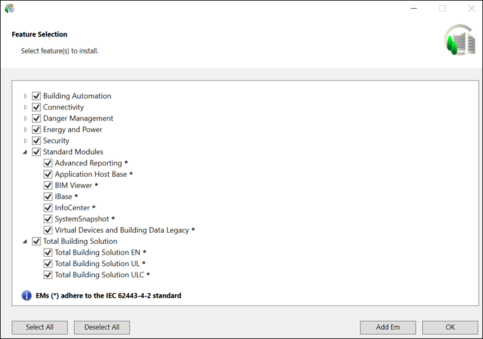

An asterisk (*) displays next to the extension that are IEC62443-4-2 certified in the Feature Selection dialog box.
If all mandatory and non-mandatory extensions are IEC certified, a message "Platform and EMs (*) adhere to the IEC 62443-4-2 standard" displays in the Feature Selection dialog box.
If any of the mandatory extension is not IEC certified, a message “EMs (*) adhere to the IEC 62443-4-2 standard” displays in the Feature Selection dialog box.
If any of the non-mandatory extension is not IEC certified, a message "Platform adheres to the IEC 62443-4-2 standard" displays in the Feature Selection dialog box.
- Click Next.
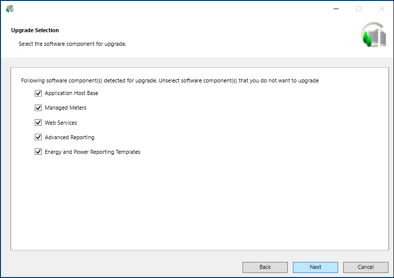
- The Upgrade Selection dialog box displays only when an update (higher version) is available on the distribution media for an already installed extension. It lists and selects by default all the installed extensions for which the corrected/updated extension is available.
NOTE: For upgrading an already installed extension, ensure that the parent extension is also selected, if available on the distribution media and requires upgrade. If you do not select the parent extension for upgrade and complete the upgrade process of an already installed extension, then you can run into several runtime issues. To resolve this, you must re-run the Gms.InstallerSetup.exe file and then proceed with the upgrade process ensuring that the parent extension is selected.
Ensure that the post-installation steps for upgradable extensions is configured. - The PostInstallation Steps Selection dialog box displays listing the post-installation steps, if available, for the already installed or newly selected extensions. Only the post-installation steps having
Execute = AskUserfor new extensions andInvolvedInUpgradeWorkflow = AskUserfor already installed upgradable extensions configured in the [GMS\EMName]PostInstallationConfig.xml file are displayed in the PostInstallation Steps Selection dialog box.
NOTE: During upgrade of the Platform or extension, the Post Installation folder is copied to ..\GMSMainProject and the post installation steps are executed from ..\GMSMainProject\PostInstallation\GMS or ..\GMSMainProject\PostInstallation\EM\[EM Name]. Before copying the folder, the existing Post Installation folder is deleted. - Deselect the post-installation step that you do not want to execute.
Click Deselect All to deselect all the listed post-installation steps in the PostInstallation Steps Selection dialog box. - Click Select All to select all the post-installation steps.
NOTE: For all the post-installation steps, ifExecute = Alwaysfor newly installed extensions andInvolvedInUpgradeWorkflow = Alwaysfor the already installed upgradable extensions, is configured in the [EM Name]PostInstallationConfig.xml file, then the PostInstallation Steps Selection dialog box does not display. In this case the post-installation steps are directly listed in pending list of the Ready to Install the Program dialog box. 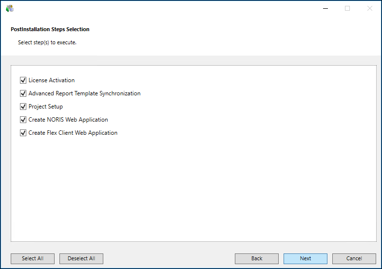
- Click Next until the Ready to Install the Program dialog box displays. It displays the name of the extension module that you are installing or updating.
- Click Install to complete the upgrade process.
- The selected extension modules are upgraded or installed. The post-installation steps, if available, for Desigo CC , already installed extensions and the newly installed extensions are also executed.
Install or Upgrade a Language Pack using the Distribution Media Manually
Scenario: A revised version of a language pack is available or you want to update an existing language pack to keep synchronized with the current update of the software components. For this you want to update an already installed language packs of Desigo CC or an installed extension or install a one or more new language packs.
To add a language pack, the language pack must be available in the Languages folder.
- Desigo CC V4.0 is installed.
- From the InstallFiles folder on the distribution media, select the Gms.InstallerSetup.exe file and double-click to run.
- A error message may display, if the operating system is not supported by Desigo CC . Click OK to abort the installation. Click View Log to open the log file, which informs you about the supported operating systems.
- Click Next until the Setup Type Selection dialog box displays.
- Click Modify adjacent to Language Packs to open the Language Packs dialog box.
- It lists the language packs that are already installed as selected and disabled. These are upgraded, during the upgrade process, if available on the distribution media. Otherwise, a warning displays.
- The Language Packs dialog box also lists and selects all the language packs available in the Languages folder located at the path …\InstallFiles on the distribution media. If you have already selected extensions containing the listed language packs on the distribution media, the listed language packs are selected by default in the Language Packs dialog box.
- Do one of the following to determine which language packs you want to have installed:
- From the Language Pack Name column, select only the required language packs for installation.
NOTE: The Select All/Deselect All buttons are enabled only when at least one language pack, available on the distribution media, is not yet installed and listed in the Language Packs dialog box. This is not applicable to language packs already installed. - If you have a language pack on your computer that is not listed in the Language Pack Name column, click Add Language Pack, navigate to the Languages folder containing the language pack you want to install, select it and click OK.
NOTE 1: To add a language pack, the language pack must be available in the Languages folder. Alternatively, you can select the Languages folder itself, which in turn lists and selects by default all the language packs included in the Languages folder.
NOTE 2: The Installer calculates and displays the disk space (in MB) required for each selected language pack, as well as the total disk space required for all selected language packs. The total disk space for all selected language packs is added to the total disk space for the installation directory.
NOTE 3: All required language packs must be installed before creating a customer project using SMC. Once the customer project is created, you can install additional language packs. However, you cannot add them to the available project languages. For adding a newly added language pack, you must create another project. 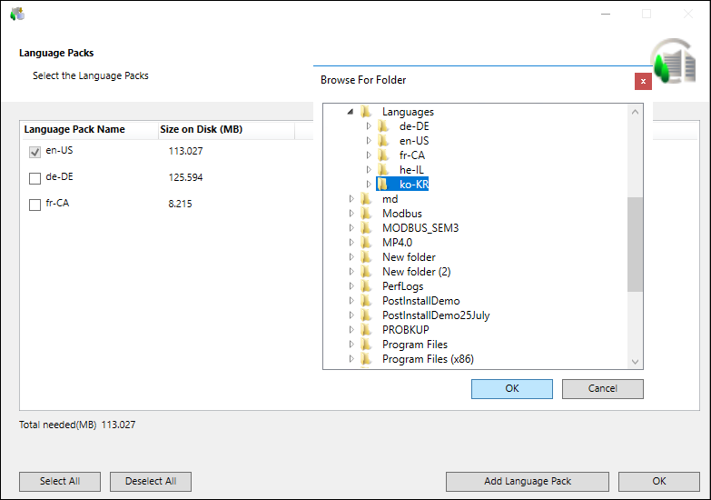
- Click OK again to return to the Setup Type Selection dialog box.
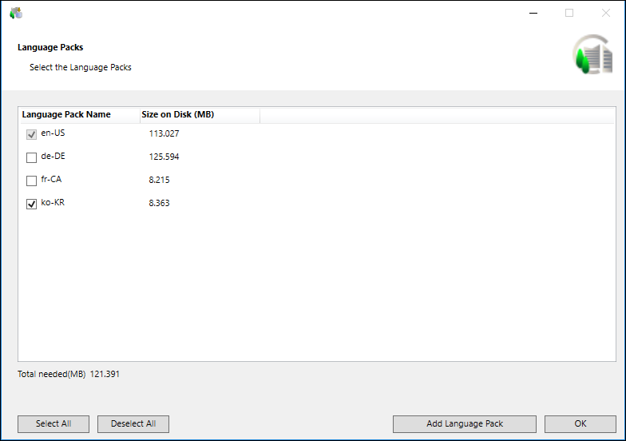
- Click Next until the Ready to Install the Program dialog box displays. It displays the name of the management station for which you are about to update the language pack.
- Click Install to complete the upgrade procedure.
- The selected language pack is upgraded.
Install or Upgrade a Prerequisite using the Distribution Media Manually
Scenario: You want to overwrite an already installed non-mandatory prerequisite or to install a new non-mandatory prerequisite.
- Desigo CC V4.2/5.0 is installed.
- From the InstallFiles folder on the distribution media, select the Gms.InstallerSetup.exe file and double-click to run.
- A error message may display, if the operating system is not supported by Desigo CC . Click OK to abort the installation. Click View Log to open the log file, which informs you about the supported operating systems.
- Click Next until the Prerequisite Version Selection dialog box displays. The Prerequisites Version Selection dialog box lists the required versions of the installed prerequisites and the actions the Installer will take (for example, Uninstall and Install/Upgrade) during the upgrade.

- Click Next until the Ready to Install the Program dialog box displays. It lists the prerequisite name that you are installing or updating.
- Click Install to complete the upgrade procedure.
- The selected non-mandatory prerequisites are upgraded or installed.
Install or Update an Extension
Scenario: You want to update an existing extension to keep synchronized with the current update of the software components. For this you want to update an already installed extension or install one or more new extensions.
To add an extension it must be available at the path ....\EM\[EM Name].
- Desigo CC V4.0 is installed.
- You have verified the upgrade planning requirements.
- The post-installation steps for the platform, installed upgradable extensions, new extensions are configured and enabled.
- The Update icon is available on the desktop.
- Go to Desktop, right-click the Update icon and select Run as administrator.
- The Welcome to the Desigo CC Install Wizard dialog box displays.
- Click Next.
- The Setup Type Selection dialog box displays.
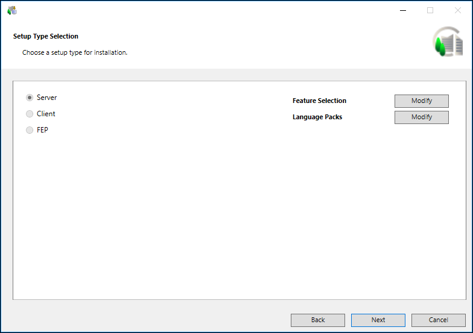
- Click Modify adjacent to Feature Selection to open the Feature Selection dialog box. It lists the extension suites, along with the extensions that are already installed. By default, the extensions that are already installed on the installed setup type are selected and disabled.
NOTE: The mandatory extension and its parent extension (mandatory or non-mandatory) are not displayed for selection/deselection in the Feature Selection dialog box. However, they are listed later in the Ready to Install the Program dialog box and are always installed/upgraded. An asterisk (*) displays next to the extension that are IEC62443-4-2 certified in the Feature Selection dialog box.
If all mandatory and non-mandatory extensions are IEC certified, a message "Platform and EMs (*) adhere to the IEC 62443-4-2 standard" displays in the Feature Selection dialog box.
If any of the mandatory extension is not IEC certified, a message “EMs (*) adhere to the IEC 62443-4-2 standard” displays in the Feature Selection dialog box.
If any of the non-mandatory extension is not IEC certified, a message "Platform adheres to the IEC 62443-4-2 standard" displays in the Feature Selection dialog box.
- Click Add EM.
- The Browse For Folder dialog box displays.
- Do one of the following:
- Browse and select an individual [EM Name] folder to install/update. This folder must be available in the valid folder structure ....\EM\[EM Name]. Ensure that the parent extension of the newly selected extension is also selected. Otherwise, the newly selected extension (child) cannot be added and a warning displays.
It also automatically adds the extension suite for the selected extension, if the extension suite is not listed. - Browse and select the EM folder to install all the available extensions.
NOTE: If an already installed extension that you want to upgrade is dependent on a newly introduced parent extension, then the parent extension displays in the Feature Selection dialog box and is selected by default. Additionally, a warning displays informing you that if you deselect this new parent extension, then the already installed dependent extensions will not be added to the Upgrade Selection dialog box and hence will not be upgraded. Ensure that the parent-dependent EM folder is present in the distribution media otherwise, the installed extension are not upgraded. - Click OK to return to the Feature Selection dialog box.
- The extension is selected and displays in the selected extension list. You can expand the relevant feature tree to view the newly added extension.
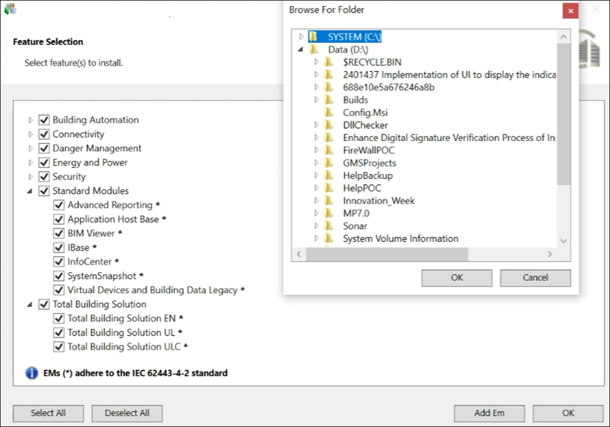
- The Select All and Deselect All buttons become enabled.
The disk space is updated for the newly selected extension. The default language pack, en-US, is installed during the extension installation. If you add any extension, the language packs available in Languages folder parallel to EM folder, if available, are also added for all the installed extensions, as well as for Desigo CC.
NOTE: If the extension is not valid, it is not installed, and a warning message displays. If you selected a new extension, it may have EULA agreement that you must agree upon.
Similarly, if the post-installation steps for the newly selected extension are not consistent then a warning message displays. For more information, see Consistency Check Scenarios. - In the Feature Selection dialog box, click OK to return to the Setup Type Selection dialog box.
- Click Next.
- The Upgrade Selection dialog box displays only when you have selected an installed extension for upgrade. It lists all the installed extension modules that you want to upgrade. The extensions are selected by default.
NOTE: For upgrading an already installed extension, ensure that the parent extension is also selected, if available, and requires upgrade. If you do not select the parent extension for upgrade and complete the upgrade process of an already installed extension then, you can run into several runtime issues. To resolve this, you must click the Update icon and run as admin and then proceed with the upgrade process ensuring that the required parent extension is selected. If you deselect any parent extension from the list, then child extension is automatically deselected automatically. Those deselected extensions will not be added in the pending list in the Ready to Install the Program dialog box. 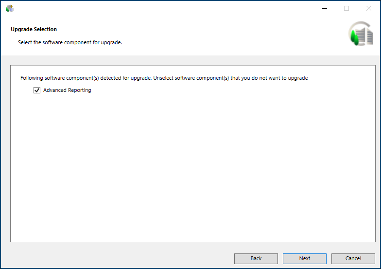
- Click Next.
- The PostInstallation Steps Selection dialog box displays listing the post-installation steps, if available, for the already installed or newly selected extensions.
Only the post-installation steps havingExecute = AskUserfor new extensions andInvolvedInUpgradeWorkflow = AskUserfor already installed upgradable extensions configured in the [GMS\EMName]PostInstallationConfig.xml file is displayed in the PostInstallation Steps Selection dialog box.
NOTE: During upgrade of an extension, the Post Installation folder is copied to ..\GMSMainProject and the post installation steps are executed from ..\GMSMainProject\PostInstallation\EM\[EM Name]. Before copying the Post Installation folder, the existing Post Installation folder is deleted. - Deselect the post-installation step that you do not want to execute:
- Click Deselect All to deselect all the listed post-installation steps in the PostInstallation Steps Selection dialog box.
- Click Select All to select all the post-installation steps.
NOTE: For all the post-installation steps, ifExecute = Alwaysfor newly installed extensions andInvolvedInUpgradeWorkflow = Alwaysfor the already installed upgradable extensions, is configured in the [EM Name]PostInstallationConfig.xml file, then the PostInstallation Steps Selection dialog box does not display. In this case, the post-installation steps are directly listed in pending list of the Ready to Install the Program dialog box. 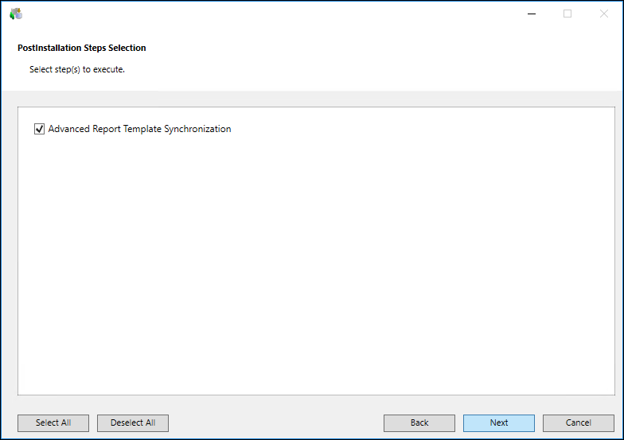
- Click Next until the Ready to Install the Program dialog box displays. It displays the extensions, the selected post-installation steps for the newly added extension that you are about to install.
NOTE: If there is any version conflict between the installed prerequisite version and the one you are about to install, the Prerequisite Version Selection dialog box displays. 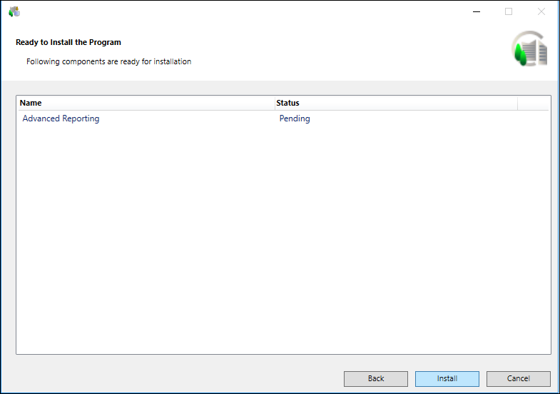
- Click Install.
- The selected extension is installed/overwritten along with its prerequisite(s), EULA files, if any and language packs.
Install or Update a Language Pack
Scenario: A revised version of a language pack is available or you want to update an existing language pack to keep synchronized with the current update of the software components. For this, you want to update an already installed language pack of Desigo CC or an installed extension or install a one or more new language packs.
To add a language pack, the language pack must be located in the Languages folder.
NOTE:
All required language packs must be installed before a customer project is created using SMC. Once the customer project is established, you can install additional language packs. However, you cannot add them to the available project languages. For adding new language packs, you must create another project.
You must select only the required language packs for installation.
- Desigo CC V4.0 is installed.
- The Update icon is available on the desktop.
- Go to the desktop, right-click the Update icon and select Run as administrator.
- The Welcome to the Desigo CC Install Wizard dialog box displays.
NOTE: The Installer language is en-US and cannot be changed. - Click Next.
- The Setup Type Selection dialog box displays.
- Click Modify adjacent to Language Packs to open the Language Packs dialog box. It lists the language packs that are available at the path …\InstallFiles\Languages.
The already installed language packs display as selected and disabled. - Do any of the following:
- Click Add Language Pack, navigate to the Languages folder containing the language pack you want to install, select it and click OK.
The selected language pack gets added in the Language Packs dialog box and is selected by default.
NOTE: To add a language pack, the language pack must be located in the Languages folder. For more information, see Language Packs and the List of Supported Languages. - Select Languages folder containing language packs that you want to install/update.
All the language packs contained in the Languages folder get added in the Language Packs dialog box and are selected by default. - The disk space (in MB) is updated for the newly selected language pack as well as the total disk space required for all selected language packs. The total disk space is added to the total disk space for the installation directory.
NOTE: The Select All and Deselect All buttons select and deselect respectively only those language packs that are not yet installed. This is not applicable to already installed language packs. 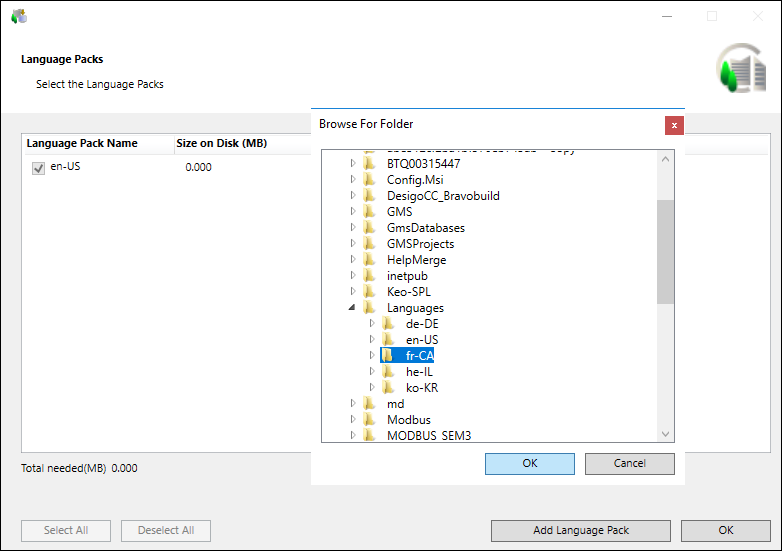
- In the Language Packs dialog box, click OK to return to the Setup Type Selection dialog box.
NOTE: You can also overwrite an already installed language pack. Note that the disk space is recalculated for it. - Click Next until the Ready to Install the Program dialog box displays. It does not display the language packs that you are about to install.
- Click Install.
- The selected language pack is installed/overwritten for the already installed extensions as well as for Desigo CC .
NOTE: If the language pack is not valid, it is not installed and a warning message displays.
Enable Licensing
Licensing for Desigo CC is controlled through a tool called, License Management Utility (LMU).
Once Desigo CC is installed, the License Management Utility (LMU) (with the LMU icon on the desktop) is installed on every management station.
Before starting the SMC or launching the Desigo CC client application, you must first enable and manage licenses for Desigo CC. Otherwise, only the demo licenses are configured and you will need to close the Desigo CC client application in very short time.
Each Desigo CC management station must be licensed locally. At a minimum, you need one server license and one client license. At start-up, you can also use an Engineering license. You must have a dongle in order to use the Engineering license.
Desigo CC requires a license from the distributor.
Licenses must be bound to a physical entity, either the Desigo CC Sever (Trusted Store) or to a removable USB dongle (Certificate).
If the license is bound to the Server, LMU uses information about the Desigo CC Server hardware to generate an encrypted ID. This prevents the license from being used in other systems.
In case of a dongle (CMD.04 LMS Micro Dongle) a physical License key is generated for Desigo CC that allows the Engineering License to be activated on the system. It is easy to transfer a dongle and the license file to another computer, in cases such as a server crash.
Since LMU holds the installed licenses for Desigo CC, the operating state of Desigo CC, as well as the number of Clients, the system objects, and all functionality, is controlled through the LMU.
Activating a Customer License
In order to protect Desigo CC against piracy, a special activation is required. You can activate the license for Desigo CC from LMU using any of the following licensing methods:
- Online: Licensing carried out using the Internet or intranet on the back office license server.
- Certificate/Dongle (including remote dongle engineering): Licensing carried out using certificate files representing the license.
- For dongle-bound licenses, dongles and licenses can be obtained individually and subsequently tied to each other and loaded onto the computer.
- Engineering licenses are always dongle-bound. Where a physical connection of the dongle to the computer is not possible, for instance, during a remote support session, the engineering license can still be used for a limited time.
- Offline (Manual): Manually returning a license based on encrypted request/response files.
NOTE:
Refer to the LMU help for license activation, repair or return workflows.
Launch LMU either by double-clicking the LMU icon on the desktop or from Windows Start menu.
Remote Dongle Engineering
In order to handle engineering use cases, LMU also supports remote dongle validation. This setup is as follows:
- The engineering dongle is plugged into the Engineering computer (only micro dongle of type CMD.04 supported). Operational dongle, remote dongle and manual dongle activation works only with a micro dongle.
- Desigo CC (including LMU) installed on physical host or in virtual environment (ESX).
- No LMU installation on Engineering computer.
Tips While Working With Licenses
- If a license becomes temporarily unavailable (for example, due to network connection issues) the system continues to run for a grace period. However, the system continues to check for the license and shuts down at the end of the grace period, if none of the license checks succeeded.
- Exceeding the limits of the license (for example, by integrating more field system data points than stated in the license) puts the system into courtesy mode. Phases of courtesy mode accumulate until a total duration of 30 days is exceeded, then the server shuts down. Unless new licenses are made available, after a manual restart, the system would go again into courtesy mode exceeding and shut down.
- Any unauthorized attempt to modify system license data directly in the database (for example, change of the remaining time of a specific license mode) shuts down the system.
Licensing in Virtual Environment
In a virtual machine environment, after you have installed Desigo CC on a VM host, the LMU is installed. You must then enable license using the License Management Utility (LMU).
With LMU in the virtual environment, the physical dongle solution is not supported. For licensing of a VM, the recommended solution is to use an online license from a trusted store. You must reach the licenses from the specified License Server (TrustedStore).
NOTE:
Refer the LMU help for details on installing and configuring LMU on a VM host.
Launch LMU either by double-clicking the LMU  icon on the desktop or from Windows Start menu.
icon on the desktop or from Windows Start menu.
Enable/Disable the Section in the GMS Platform.xml File
- On the local drive, locate, right-click the GMS Platform.xml file and open with an XML Editor such as Notepad++. You can also use a simple text editor such as Notepad.
- To enable an entry or a section:
- Delete the usual XML comments "<!--" and "-->" before and after the entry or section.
For example, you want to enable the SkipInstallation section, and skip the installation of a prerequisite, Microsoft SQL Server 2022 - Express Edition. You would delete the XML comments before and after the entry, as shown below. 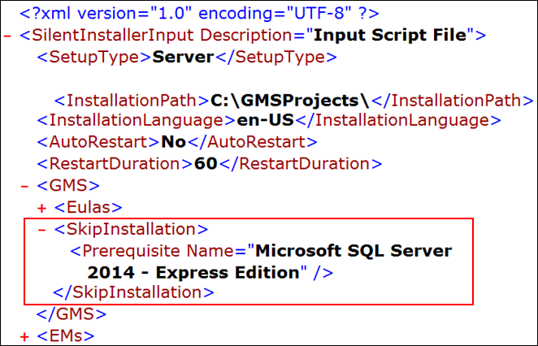
- To disable an entry or a section, add the XML comments "<!--" and "-->" before and after the entry or section.
For example, if you want to install only Desigo CC, you must disable the complete EM block, rather than disabling the EM entries one by one, as shown below:<!--<EMs>
<EM Name="EM Name1" />
<EM Name="EM Name2" />
<EM Name="EM Name3" />
<EM Name=" EM Name4" />
<EM Name=" EM Name5" />
</EMs>--> - Save the file.
Verifying and Updating the Windows Management Framework 5.1
To verify the Windows Powershell version installed on your management station, you must update Windows Management Framework 5.1 which in turn updates Windows Powershell. The operating systems, Windows 10 64-bit, Windows 11 64-bit, Windows Server 2016, and Windows Server 2022 are readily updated with Windows Management Framework 5.1. To verify the Windows Management Framework version perform the following steps:
- Go to the command prompt.
- At the command prompt, type
powershell $PSVersionTable.PSVersion. - The command prompt displays the major version of the Windows Powershell currently installed.
- If the major version is < 5.1, you must download the Windows Management Framework 5.1.
See https://www.microsoft.com/en-us/download/details.aspx?id=54616.
For instructions related to installing Windows Management Framework 5.1, see, https://docs.microsoft.com/en-us/powershell/wmf/5.1/install-configure#https://docs.microsoft.com/favicon.ico.
- Once the Windows PowerShell version is updated to version 5.1 or more, you can verify it by repeating the Steps 1 and 2.
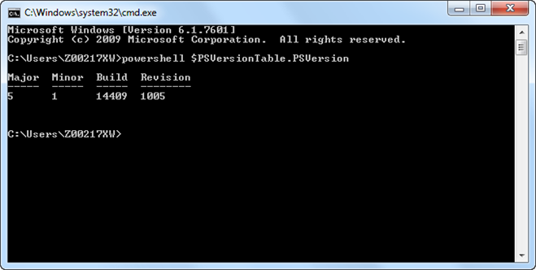
Install or Upgrade an Extension/Language Pack/Prerequisite Using the
Semi-Automatic Installation
Scenario: A revised version of an extension along with its post-installation steps, a language pack, or a prerequisite is available or you want to update an existing it to keep synchronized with the current update of the software components. For this, you want to update an already installed or install new extension along with its post-installation steps, if any, or a language pack, or a prerequisite.
To add an extension, it must be available at the path ....\EM\[EM Name]. To configure the extension from another location than the distribution media, you need to configure the path of this extension in the attribute [ExternalEMsPath] of the GMS Platform.xml file.
To add a language pack, the language pack must be located in the Languages folder.
To add a prerequisite, the prerequisite must be located at the ...\GMS\Prerequisites folder.
Patches of selected extensions (if present in the Quality Updates or Hotfixes folder in the Installation media at ...\InstallerDVD\InstallFiles in parallel to the GmsInstallerSetup.exe file) are considered for upgrade only if the version of the patches is compatible with the extensions.
If a patch for an extension is not installed due to non-installation or upgrade of the extension, then such patches are copied to the installed system and when the corresponding extension is selected for installation, these patches are also installed.
Patches from Quality Updates folder are copied to, GMSProjects > GMSMainProject > Patches > QualityUpdates
Patches from the Hotfixes folder are copied to GMSProjects > GMSMainProject > Patches > Hotfixes
NOTE:
During a silent or semi-automatic installation/upgrade, if an EM EULA is accepted in an GMS Platform.xml file, it automatically accepts the EULA. In this case, it is mandatory to hand over the EULA as a file or printout to the end customer and ensure the acceptance of the EULA, duly signed by the end customer.
- Desigo CC4.2/5.0 is installed.
- You have verified the upgrade planning requirements.
- The instructions file GMS Platform.xml is configured and enabled, with the extension is modified from .txt to .xml, and available at the path ...\InstallFiles\Instructions containing the same Setup type as that of the existing installation.
- The post-installation steps for the installed upgradable extensions as well as for the new extensions which are configured in the GMS Platform.xml are enabled and their extension modified from .txt to .xml.
- From the InstallFiles folder of the distribution media, select the Gms.InstallerSetup.exe file and double-click to run.
- A error message may display, if the operating system is not supported by Desigo CC . Click OK to abort the installation. Click View Log to open the log file, which informs you about the supported operating systems.
- The Installation Selection dialog box is skipped when for a setup type only one instruction file is present in the Instructions folder and there are no inconsistencies in the distribution media or GMS Platform.xml file and the
ShowSystemRequirementtag in the GMS Platform.xml file is set toFalse. - The Installation Selection dialog box displays only when there are multiple instruction files in the Instructions folder or when there is a single GMS Platform.xml file present for a setup type and there are inconsistencies either in the distribution media or in the GMS Platform.xml file or that file has
ShowSystemRequirementtag set toTrue. - If multiple files are available for selection, then select the required file from the listed files and click Next.
NOTE: Any mismatch between the GMS Platform.xml file and the software distribution is listed in the Warnings section. (See Consistency Check Scenarios). - If all the files in the Instructions folder are corrupted, then they are not available for selection and the Next button is disabled and you cannot work with semi-automatic installation. The Customize button is enabled and displayed only when one of the files available in the Instructions folder contains the value for the tag Customize = True.
- By default, all the previously installed extensions along with their post-installations steps, if available in the media, are upgraded. Along with that, all the extensions that you have configured in the GMS Platform.xml file also get installed during the upgrade process. Additionally, you can also add an extension or an extension suite from the location other than the distribution media using Add EM. It should have a valid folder structure ....\EM\[EM Name]. Ensure that the parent extension of the newly selected extension is also selected. Otherwise, the newly selected extension (child) cannot be added and a warning displays.
It also automatically adds the extension suite for the selected extension, if the extension suite is not listed.
However, if there is any inconsistency in the configured extension (for example, the configured extension is inconsistent) or in the post-installation step (for example, the configured post-installation step is not available in the [GMS\EMName]PostInstallationConfig.xml file), then the Feature Selection dialog box or the PostInstallation Steps Selection dialog box displays, assisting you in selecting the extension or the post-installation step. Only the post-installation steps havingExecute = AskUserfor new extensions andInvolvedInUpgradeWorkflow = AskUserfor already installed upgradable extensions configured in the [GMS\EMName]PostInstallationConfig.xml file are displayed in the PostInstallation Steps Selection dialog box.
NOTE: During upgrade of the Platform or extension, the PostInstallation folder is copied to ..\GMSMainProject and the post-installation steps are executed from ..\GMSMainProject\PostInstallation\GMS or ..\GMSMainProject\PostInstallation\EM\[EM Name]. Before copying the folder, the existing PostInstallation folder is deleted.
For more information see, Consistency Check Scenarios.
Click Next.
NOTE: For all the post-installation steps, ifExecute = Alwaysfor newly installed extensions andInvolvedInUpgradeWorkflow = Alwaysfor the already installed upgradable extensions, is configured in the [EM Name]PostInstallationConfig.xml file, then the PostInstallation Steps Selection dialog box does not display. In this case, the post-installation steps are directly listed in pending list of the Ready to Install the Program dialog box. An asterisk (*) displays next to the extension that are IEC62443-4-2 certified in the Feature Selection dialog box.
If all mandatory and non-mandatory extensions are IEC certified, a message "Platform and EMs (*) adhere to the IEC 62443-4-2 standard" displays in the Feature Selection dialog box.
If any of the mandatory extension is not IEC certified, a message “EMs (*) adhere to the IEC 62443-4-2 standard” displays in the Feature Selection dialog box.
If any of the non-mandatory extension is not IEC certified, a message "Platform adheres to the IEC 62443-4-2 standard" displays in the Feature Selection dialog box.
- By default, all the previously installed languages packs, if available in the distribution media, are upgraded. Along with that, all the new language packs that you have configured in the GMS Platform.xml file also get installed during the upgrade process. However, any inconsistency in the GMS Platform.xml file with respect to Language Pack Name (for example, LanguagePackName entry is missing or language name is invalid) or with the Language Pack (for example, Language Pack not present in software distribution), results in displaying the Language Packs dialog box, where all the already installed language packs are selected and disabled, by default, thus not allowing you to modify them.
NOTE: Make sure you install only required language packs and extensions, as it adds to the total disk space. All required language packs must be installed before you create a customer project. For adding a newly added language pack, you must create another project. See Language Packs and the List of Supported Languages. - Click Next.
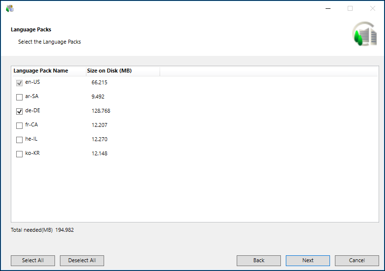
- All the previously installed prerequisites are upgraded by default, if they are available in the distribution media. At the same time the prerequisites, listed in the
<SkipInstallation>section are skipped.
NOTE: The prerequisite, listed in the<SkipInstallation>section, for example Microsoft SQL Server 2022 - Express Edition, is skipped only when the valueAskUser = 1andMandatory = 0is configured in the GMS/EMConfig.xml file.
The Prerequisite Version Selection dialog box displays only when there is any conflict with the installed prerequisites and the<AutoResolvePrerequisiteConflict>is set toFalsein the GMS Platform.xml file. It lists the required versions of the installed prerequisites and the actions the Installer will take (for example, Uninstall and Install/Upgrade) during the upgrade. - Click Next.
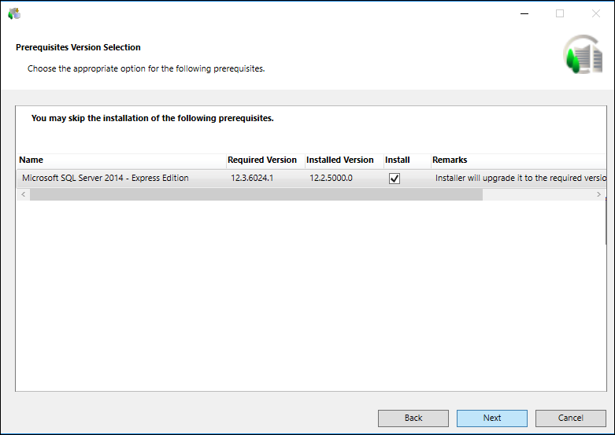
- Click Next until the Ready to Install the Program dialog box displays.
It displays the name of the extension, language pack or prerequisite that you are installing or updating. Moreover, the mandatory extension and its parent extension (mandatory or non-mandatory) are directly listed in the Ready to Install the Program dialog box and are always installed/upgraded. - Click Install to complete the upgrade process.
- The selected extensions, language packs, prerequisites are upgraded or installed.
The post-installation steps, if available, for Desigo CC , already installed extensions and the newly installed extensions are also executed.
Install or Upgrade an Extension/Language Pack/Prerequisite Using the Silent Installation
Scenario: A revised version of an extension along with its post-installation steps, a language pack, or a prerequisite is available or you want to update an existing it to keep synchronized with the current update of the software components. For this, you want to update an already installed or install new extension along with its post-installation steps, if any, or a language pack, or a prerequisite using the silent installation.
To add an extension, it must be available at the path ....\EM\[EM Name]. To configure the extension from another location than the distribution medium, you need to configure the path of this extension in the attribute [ExternalEMsPath] of the GMS Platform.xml file.
To add a language pack, the language pack must be located in the Languages folder.
To add a prerequisite, the prerequisite must be located at the ...\GMS\Prerequisites folder.
Patches of the selected extensions (if present in the Quality Updates or Hotfixes folder in the Installation media at ...\InstallerDVD\InstallFiles in parallel to the GmsInstallerSetup.exe file) will be considered for upgrade only if the version of the patches is compatible with the extensions.
If a patch for an extension is not installed due to non-installation or upgrade of the extension, then such patches are copied to the installed system and when the corresponding extension is selected for installation, these patches are also installed.
Patches from the Quality Updates folder are copied to GMSProjects > GMSMainProject > Patches > QualityUpdates
Patches from the Hotfixes folder are copied to GMSProjects > GMSMainProject > Patches > Hotfixes
NOTE:
During a silent or semi-automatic installation, if a Desigo CC EULA or EM EULA is accepted in an XML file, it automatically accepts the EULA. In this case, it is mandatory to hand over the EULA as a file or printout to the end customer and ensure the acceptance of the EULA, duly signed by the end customer.
- Desigo CC V2.1/3.0/4.0 is installed.
- You have verified the upgrade planning requirements.
- Acquired the administrative rights on the system where you are performing the silent installation.
- The GMS Platform.xml file is verified and enabled with the extension modified from .txt to .xml and available at the path ...\InstallFiles\Instructions containing the same Setup type as that of the existing installation.
- The post-installation steps for the installed upgradable extensions as well as for the new extensions which are configured in the GMS Platform.xml for are verified and enabled. (modified the extension .txt to .xml). During upgrade of the platform or extension, the PostInstallation folder is copied to ..\GMSMainProject and the post-installation steps are executed from ..\GMSMainProject\PostInstallation\GMS or ..\GMSMainProject\PostInstallation\EM\[EM Name]. Before copying the folder, the existing PostInstallation folder is deleted.
- Select Windows Start menu > All Programs > Accessories and select the Command Prompt menu, right-click it and then select Run as administrator).
- A User Account Control message may display if your UAC settings are set to Default or Always Notify, asking you if you want to allow this installation program to make changes to the computer. Click Yes.
- The Command Prompt displays.
- Run the following command in the Command Prompt:
“<Full path of the file Gms.InstallerSetup.exe>” /q <Full path of the silent installation XML>
NOTE: Make sure that you provide the correct parameters in the command. Otherwise, the silent installation does not start and an error displays.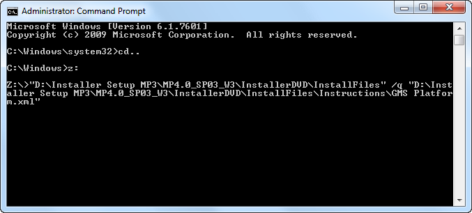
- A error message may display, if the operating system is not supported by Desigo CC . Click OK to abort the installation. Click View Log to open the log file, which informs you about the supported operating systems.
- The Desigo CC icon displays in the taskbar with the notification
Installation started.
As the upgrade proceeds, the taskbar icon tooltip displays in the Notification area. It informs you about the upgrade status including the status of the post-installation steps that are configured.
The taskbar icon also informs you of the automatic restart, if this was configured in the XML file. However, if the installation does not continue after the restart, you must run as administrator the following command in the Command Prompt:<Full path of the file Gms.InstallerSetup.exe> /q <Full path of the silent installation XML>.
Alternatively, you can get approval from IT to change the UAC settings. (See Changing User Account Control Settings). - After the silent upgrade and configured post-installation steps are executed, right-click the taskbar Desigo CC icon to display the following context menu options:
Exit: Click this menu to exit the taskbar. Otherwise, the icon is removed from the taskbar notification area 15 minutes after the installation is completed.
View Log: Click this menu to open the Installer Log file.
- (Optional and applicable only for post-installation step – Project Setup) The already existing active project is upgraded, activated and started by default.
If the History Database was linked to the previously active project, it is also upgraded along with the Long Term Storage, if any.
All the existing web sites and web applications are also upgraded, even if the upgrade of the any of the existing web application fails. The already existing certificate is used for securing the communication between the Windows App client and the web server (IIS).
Finally, the logon dialog box displays for specifying the credentials.
If there is no already existing project, HDB and website/web application available for upgrade, then the JSON file is referred to for the creation of the project, History database and website/web application. Note that even if the HDB creation/upgrade fails, the post-installation continues with the next step. In that case, you can re-run the post-installation step for HDB creation/upgrade.
For the configured existing project’s Pmon user/web application user, if the password is expired then the web application upgrade fails and you must manually update the web application using SMC.
For more information, refer to installation log file, having the extension _SILENT for silent installation, located at the path
[System drive]:\ProgramData\[company name]\GMS\InstallerFramework\GMS_Installer_Log.
For any invalid website/web application configuration, missing IIS configuration, invalid domain user and so on, a notification is displayed. For more information, refer to the SMC log when required at the following path
[installation drive]:\[installation folder]\GMSMainProject\log. - (Optional and applicable only for post-installation steps of other extensions) The post-installations steps of other extensions, when correctly configured and enabled by modifying the .txt file to.xml, are executed as well successfully.
NOTE 1:
During the silent upgrade, the Installer ensures that all parent extensions of the configured extensions are upgraded, even if they are not explicitly mentioned in GMS Platform.xml file. Moreover, a mandatory extension and its parent extension (mandatory or non-mandatory) even if they are not explicitly mentioned in GMS Platform.xml file also get installed. To configure the extension from another location than the distribution media, you need to configure the path of this extension in the attribute [ExternalEMsPath] of the GMS Platform.xml file. Also, you need to configure those extensions in the EM section of the GMS Platform.xml file.
NOTE 2:
If there is a prerequisite conflict, the Installer, by default, takes the action (Install/Update/Skip/Abort) by selecting the default set option as in the custom installation and resolves the conflict automatically. In case of Abort, please see the Installer Log.
For example, if a higher compatible version of the software is installed, the Installer skips the installation of the prerequisite.
NOTE 3:
If a lower compatible version is installed, then the Installer upgrades the prerequisite.
However, for a non-mandatory prerequisite, the Installer completes the installation, but fails to install the non-mandatory prerequisite and informs you with a notification in the task bar notification area.
NOTE 4:
If a lower incompatible version is installed, by default, the Installer installs the prerequisite.
NOTE 5:
If the installation fails, you must click Exit in the context menu that displays when you right-click the taskbar icon.
Manually Install and Configure IIS on Different OS Types
If you have already installed some of the IIS components before proceeding with the installation of a setup type (Server, Client/FEP), Installer does not identify and install any remaining component of IIS during the installation of the selected setup type.
- To complete the IIS configuration, you must manually configure IIS according to the operating system.
Furthermore, you also need to install manually install the component Microsoft Application request Routing (ARR) to be able to work with Windows App and Flex Clients. - You must manually remove the default IIS website created in IIS Manager before working with Websites in SMC. (see Remove Default Website in IIS Manager in Website Procedures)
- If you want the logged-in user to be also the member of IIS_IUSRS user group, you need to do this manually. (see Create an IIS User and Assigning it to the IIS_IUSRS Group in Website Procedures)
- IIS installations on computers in a DMZ with firewalls are supported.
- You can run the Windows App client on the IPv6 network enabled system. However, you must ensure that the system where the web server is installed has the dual stack (both IPv4 and IPv6) network enabled.
For more information on enabling the dual stack (both IPv4 and IPv6) network on the web server, see Running Windows App Clients on IPv6 Systems in Web Application Procedures.
Depending on the Windows operating system, the IIS installation steps vary as described in the following sections:
Install IIS on Windows 10 and Windows 11
- From the Windows Start Menu navigate to Windows System and select Control Panel. For Windows 11, from the Windows Start Menu navigate to Windows Tools and then select Control Panel.
- The Control Panel window displays.
- Select Programs > Programs and Features > Turn Windows features on or off.
- The Windows Features dialog box displays.
- Expand the Internet Information Services check box.
- Expand Web Management Tools and select IIS Management Console.
- Expand Internet Information Services > World Wide Web Services > Application Development Features, and select the ASP.NET 4.7 check box (this automatically checks other relevant boxes). For Windows 10 version 2004 and Windows 11, select the ASP.NET 4.8 check box.
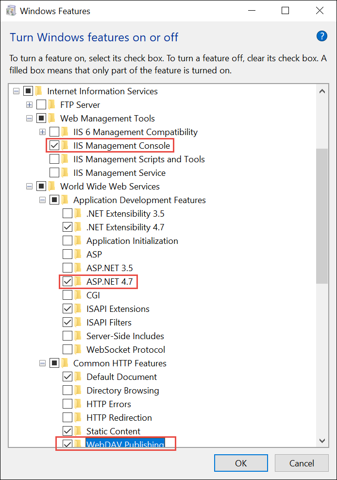

- Expand Internet Information Services > World Wide Web Services > Common HTTP Features, and select the WebDAV Publishing check box (this automatically checks other relevant boxes).
- Click OK.
- (Optional) Restart the computer.
Install IIS on Windows Server 2019 and Windows Server 2022
- If Server Manager is already open, go to Step 2. If Server Manager is not open, do one of the following:
a. On the Windows desktop, click Server Manager in the Windows taskbar.
b. On the Windows Start screen, click Server Manager. If it is not there, type Server Manager in the Search field. - On the Manage menu, click Add Roles and Features.
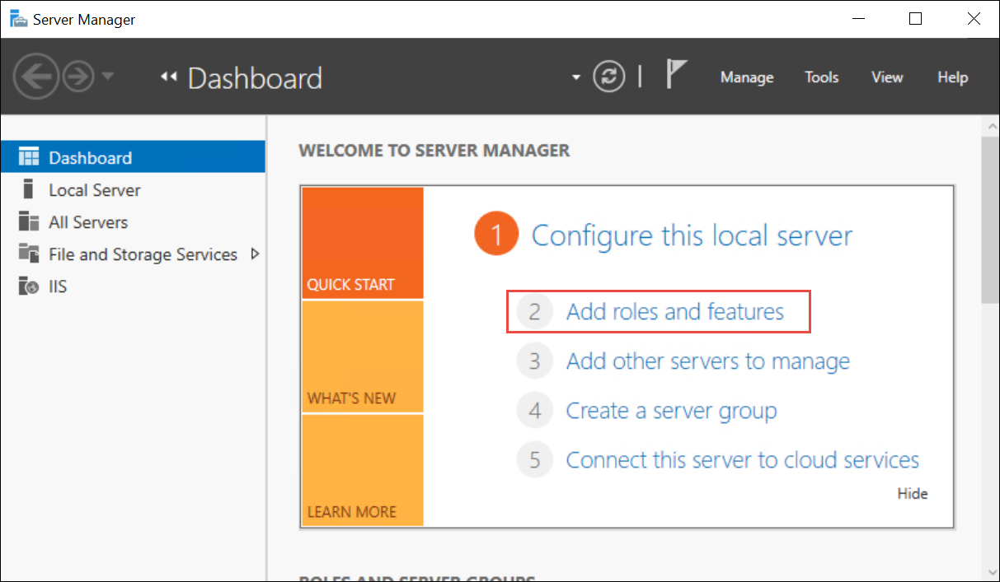
- The Add Roles and Features Wizard dialog box displays.
- In the Add Roles and Features Wizard dialog box, click Next until Server Roles is selected.
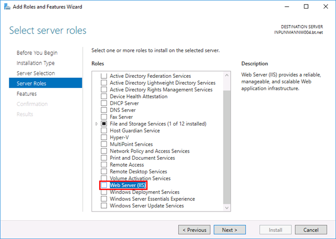
- In Server Roles, do the following:
a. Select Web Server (IIS): This opens a dialog box asking you to confirm adding the IIS Management Console in the Management Tools of the Select role services window.
b. Click Add Features. Web Server (IIS) gets selected. 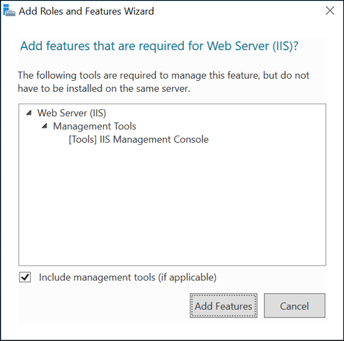
- The feature Web Server (IIS) gets added.
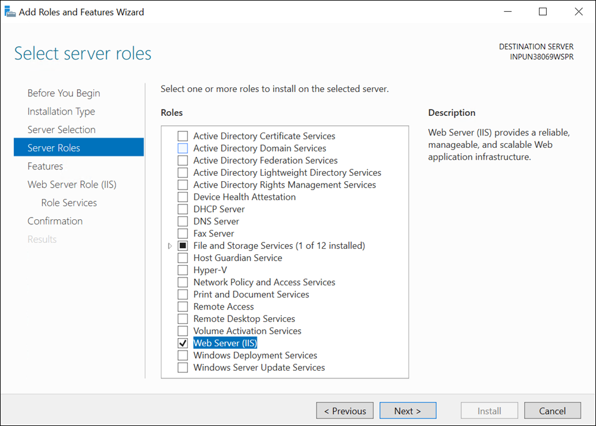
- Click Next til Role Services is selected.
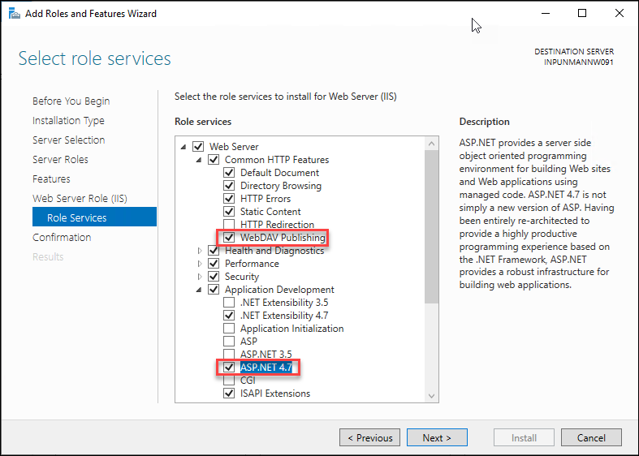
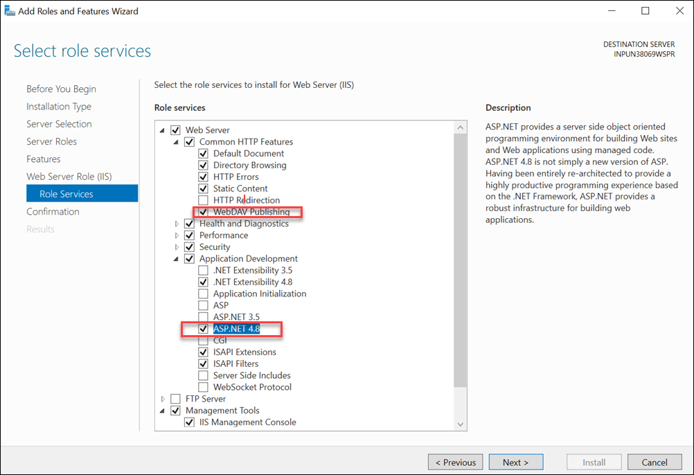
- In the Select role services window, proceed as follows:
a. Expand Web Server > Common HTTP Features, and select WebDAV Publishing.
b. Scroll down to expand Application Development.
c. Select as appropriate as per OS
Windows Server 2019: ASP.Net 4.7
Windows Server 2022: ASP.Net 4.8
d. This opens a dialog box asking you to confirm adding additional features that must be installed for ASP.Net 4.7 or ASP.Net 4.8.
e. Click Add Features. 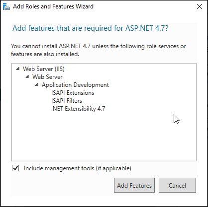
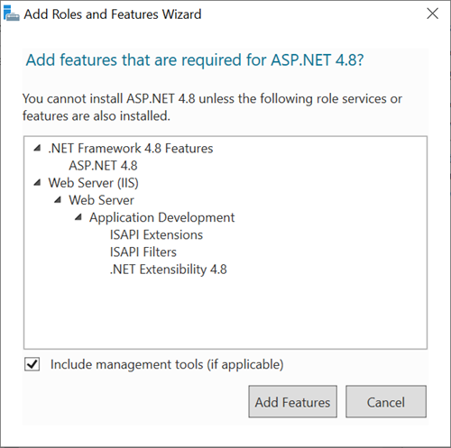
- The Confirm installation selections dialog box displays.
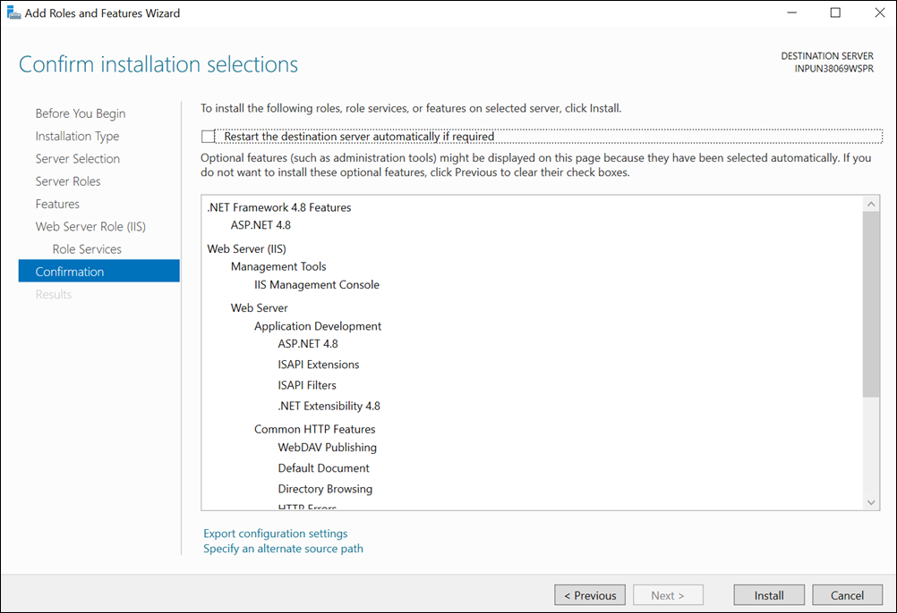
- Click Install.
- The features are installed and IIS is configured.
- Click Close.
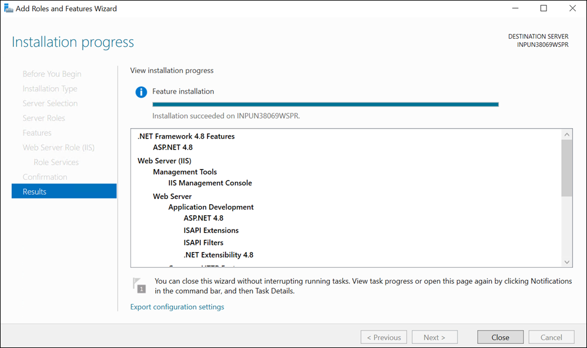
Install Application Request Routing (ARR)
If you have installed and configured IIS, then you must manually install the latest Application Request Routing (ARR) software from the path
…\InstallFiles\EM\Installer\Prerequisites\Application Request Routing. Right click the Gms.ARRInstaller.exe file and select the Run as administrator option to install the prerequisite Application Request Routing on the third-party machine.
On right clicking the Gms.ARRInstaller.exe file, a command prompt appears that displays the installation status of ARR and its dependencies.
If the required or higher version of ARR or its dependencies are already installed on the machine, then the installation is skipped and a message informing the presence of the ARR along with its dependencies displays.
Furthermore, to ensure Windows App, Flex Clients are working properly, you also should verify that Proxy for the ARR cache in IIS Manager is enabled. See Enable Proxy for the Application Request Routing (ARR) Cache in IIS in Website Procedures.
Customizing Installation Folder Selection for Prerequisites
Scenario: During Installation of DesigoCC, the Installation Folder Selection dialogue box is displayed with default installation directory selected. Installer allows you to select or customize the installation directory for prerequisites. For more information, see Verify the Installation Folder Selection in Installing the Server/Client/FEP using Custom Mode.
Considering you are performing installation of DesigoCC on fresh installation, then based on the selected setup type installation mode, check the following factors:
For Custom Installation:
- List of all prerequisites to install is displayed in the Prerequisite Installation Folder dialogue box.
- Prerequisites that are already installed are excluded from prerequisite list.
- Disk space is calculated based on the path changed.
For Semi-Automatic Installation:
- The Prerequisites Installation Folder path is mentioned in the XML file (GMS Platform.xml). Any incorrect path enables the browse button on the Prerequisite Installation Folder dialogue box.
- If the prerequisite is not selected in the Prerequisites Version Selection option, then it is not displayed in the Prerequisites Installation Folder list.
- Any inconsistency in name or path in the XML file (GMS Platform.xml) is logged.
For Silent Installation:
- The Prerequisites Installation Folder path is mentioned in the XML file (GMS Platform.xml).
- In case of incorrect path or warning result, a default installation path is used.
Considering you are upgrading the management station, then based on the selected setup type installation mode, check the following factor:
- The Prerequisite Installation Folder option is disabled. The required prerequisites are installed at the default location.
- If a prerequisite is installed in:
- Custom Installation: Users can browse and set the Prerequisites Installation Folder path.
- Semi-automatic Installation: The Prerequisites Installation Folder path is mentioned in the XML file (GMS Platform.xml). Any inconsistency in name or path in the XML file (GMS Platform.xml) is logged.
- Silent Installation: The Prerequisites Installation Folder path is mentioned in the XML file (GMS Platform.xml). In case of incorrect path or warning result, a default installation path is used.